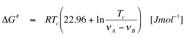

Lecture 08
Gaussian Multiplication in 1H Spectra
• If we multiply the signal with a gauss, emphysizing the later part of the FID we gain resolution (compare last lecture)
◇ Needs to be gaussian and not exp to avoid blow up last point which will generate wiggles
◇ To generate a nice spectra, the FID needs to decay to zero
◇ This may generate negative components in the signal. This would be a problem if you integrate over the signal
• The integral is proportional to the very first data points. If the first data points are zero, there is 50/50 positive to negative signals (integral is 0)
• We can adjust how steep the function decays and where the maximum is.
• LB is responsible for the decay, GB for the position of the gaussian bell maximum
• In 2D NMR the sin-bell function is used
◇ the sign bell is shifted such that the max is at the start of the FID (90°) and it is corrected, such that at the end of the FID the function is zero
▪ In Bruker this parameter is called ssb
• 2D spectra without window functions look very weird as they have not decayed to zero
Baseline Correction
• If there is a very strong signal you get bathtub shaped baseline correction
◇ If it looks like a saddle, the amplifier gain was too high → measure again
• The bathtub can be subtracted from a helper function
• If the baseline is not corrected, the integrals would be wrong
• A sigmoidal-shaped baseline is an often occuring problem, because we have a background signal from the probehead. Some probeheads have some glues, which will be measured when using certain nuclei
◇ as it is solid, it gets very broad lines → sigmoidal shape
• If you see a lot of positive and negative spikes, the receiver gain is too large
◇ If this is the case, the Analog to digital converter is overloaded (it can handle signals up to 216)
▪ Everything higher than this will be viewed as 216
▪ This will lead to wiggles
Linear Prediction
• If the FID is cut (like in 2D) you can predict the following datapoints (after cut)
◇ If you have measured 1000 points, you can predict another 1000
◇ Truncated signals give wiggles
◇ If you use a window function on a truncated function, you will get broad lines → Prediction is better
◇ In 1D there is no point, as i can just measure it
◇ In 2D it is a big help, as you can measure for half the time and predict the second half → it is very fast and yields better resolution
◇ For this to work it needs to recognize the signal. If the signal to noise is bad, this might not work
◇ In NOESY (weak signals) linear prediction is mostly turned off
• Linear prediction is very important when you have only a few datapoints
◇ Like in 3D NMR, you often have just 32 datapoints in one dimension and then you can enhance it to 64 which gives a big advantage
Exchange Effect in Spectra
• Some molecules spontaniously isomerize• We have:
◇ Bond vibrations (too fast for NMR)
◇ Bond rotations (too fast for NMR)
◇ Molecular rotations are on the scale of NMR frequencies (109)
◇ Slower effects will lead to line broadening
• If we have a dimethyl-formamide we have two inequivalent CH3
◇ They are chemically inequivalent, but as the amide bond has partial double-bond character → rotation is slowed down
◇ If we heat the sample, the two signals will get broader, melt together and upon further heating become sharp again, but only one peak
▪ This corresponds to slow, medium and fast exchange
▪ In fast exchange you lose signals or get very broad signals
▪ In slow exchange you have seperated signals
• Slow exchange: rate for exchange is smaller than difference of chemical shift
◇ Same thing is true for the coupling differences and the difference of the inverse of transverse relaxation
• Coalescence point: point where we go from slow to fast exchange
• After coalescence the signal moves to the average position between the signals (dependent on how strong the signals are)
• In 1D you may not see Serine and Tyrosine OH- since you are in fast exchange and they are all in the water signal
◇ Even though OH- of tyrosine and serine have very different chemical shift
• Alkaloids (cocaine etc.) yield broad lines since the ring exists in two states whose interconversion is slow
• A bad shim can also lead to broad lines or you have something paramagnetic in your sample
• In chemical shift not all signals are affected
◇ If you have a bad shim or something paramagnetic also the solvent peak is broadened
Calculations of rate constants
• We have three positibilities to determine k:
◇ we can do a temperature set of measurements and find the coalescence temp
◇ we can do a simulation
◇ we can use the maximal line broadening
• Activation energy can be calculated by NMR using the coalescence temperature and the chemical shifts

• The problem is how well can i see the Tc
◇ It is better to do a simulation
▪ You measure the spectrum at different temperatures
▪ Then you simulate the spectra at different k until it is the same as the experimental one
▪ You can get out the k from the arrhenius plot
• With 2D EXSY (same as NOESY) will show peaks which intercorrelate from two isomers
◇ Signals which deviate from the diagonal interconvert with each other
• The mixing time parameter in NOE is the time you get the system in EXSY to interconvert
• From the intensity of the cross peak to the diagonal you can get k
Saturation transfer
(important)• If i saturate a signal you equally populate alpha and beta state
◇ If this happens, the signal vanishes
◇ You can give a pulse exactly on the frequency of the solvent peak → this suppresses the solvent signal
◇ If i do this on water, the OH-groups exchange with carbohydrates → If we suppress the water, we also suppress the measured carbohydrates
▪ This is calle dsaturation transfer
◇ This can lead to complete loss of signal, but will only effect protons that can chemically exchange
◇ If i saturate A and it is interconverting to B we also affect B
• Saturation transfer is important because if you have labile protons in your sample you need to be careful doing solvent suppression
Axial Chirality
• If we have two enantiomers we see actually only one signal
◇ Diastereotopic can also be seen as two different signals (rotation of main c-c bond slow or not possible) due to axial chirality
• If we heat up the sample we loose axial chirality and therefore see one signal again
• Self decoupling by chemical exchange is it called when we dont see OH protons as it is exchanged with hydrogen from water
◇ It is 50/50 in alpha and beta state and therefore invisible
◇ If we decouple H in a carbon spectra we just flip the hydrogen between alpha and beta and back
• In Protein NMR you will overtime loose the signal of backbone amides as the N-H becomes N-D in D2O
• The faster this exchange is, the less protected the N-H is
◇ If it is involved in a hydrogen bond, it is more protected
• Therefore you can calculate protection factors